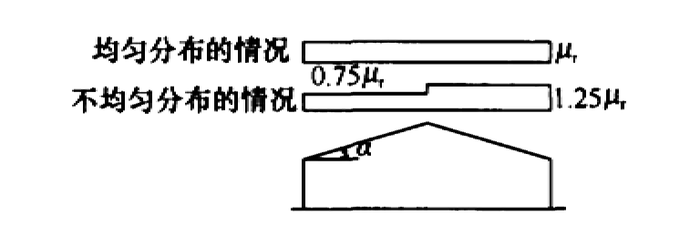

7 雪荷载
7 雪荷载
7.1 雪荷载标准值及基本雪压
7.1.1 屋面水平投影面上的雪荷载标准值应按下式计算：
$$S_{k}=μ_{r}S_{0}\tag{7.1.1}$$
| 式中 | Sk | —— | 雪荷载标准值（kN/㎡）； |
| μr | —— | 屋面积雪分布系数； | |
| S0 | —— | 基本雪压（kN/㎡）。 |
7.1.2 基本雪压应采用按本规范规定的方法确定的50年重现期的雪压；对雪荷载敏感的结构，应采用100年重现期的雪压。
7.1.3 全国各城市的基本雪压值应按本规范附录E中表E.5重现期R为50年的值采用。当城市或建设地点的基本雪压值在本规范表E.5中没有给出时，基本雪压值应按本规范附录E规定的方法，根据当地年最大雪压或雪深资料，按基本雪压定义，通过统计分析确定，分析时应考虑样本数量的影响。当地没有雪压和雪深资料时，可根据附近地区规定的基本雪压或长期资料，通过气象和地形条件的对比分析确定；也可比照本规范附录E中附图E.6.1全国基本雪压分布图近似确定。
7.1.4 山区的雪荷载应通过实际调查后确定。当无实测资料时，可按当地邻近空旷平坦地面的雪荷载值乘以系数1.2采用。
7.1.5 雪荷载的组合值系数可取0.7；频遇值系数可取0.6；准永久值系数应按雪荷载分区I、II和II的不同，分别取0.5、0.2和0；雪荷载分区应按本规范附录E.5或附图E.6.2的规定采用。
7.2 屋面积雪分布系数
7.2.1 屋面积雪分布系数应根据不同类别的屋面形式，按表7.2.1采用。
| 项次 | 类别 | 屋面形式及积雪分布系数μr | 备注 |
| 1 | 单跨单坡屋面 |  |
- |
| 2 | 单跨双坡屋面 |  | μr按第1项规定采用 |
| 3 | 拱形屋面 |  |
- |
| 4 | 带天窗的坡屋面 |  |
- |
| 5 | 带天窗有挡风板的坡屋面 |  |
- |
| 6 | 多跨单坡屋面（锯齿形屋面） |  |
μr按第1项规定采用 |
| 7 | 双跨双坡或拱形屋面 |  |
μr按第1或3项规定采用 |
| 8 | 高低屋面 |  |
- |
| 9 | 有女儿墙及其他突起物的屋面 |  |
- |
| 10 | 大跨屋面(l>100m) |  |
1 还应同时考虑第2项、第3项的积雪分布； 2 μr按第1或3项规定采用 |
| 注： | 1 第2项单跨双坡屋面仅当坡度a在20°~30°范围时，可采用不均匀分布情况； |
| 2 第4、5项只适用于坡度a不大于25°的一般工业厂房屋面； | |
| 3 第7项双跨双坡或拱形屋面，当a不大于25°或f/l不大于0.1时，只采用均匀分布情况； | |
| 4 多跨屋面的积雪分布系数，可参照第7项的规定采用。 |
7.2.2 设计建筑结构及屋面的承重构件时，应按下列规定采用积雪的分布情况：
- 屋面板和檩条按积雪不均匀分布的最不利情况采用；
- 屋架和拱壳应分别按全跨积雪的均匀分布、不均匀分布和半跨积雪的均匀分布按最不利情况采用；
- 框架和柱可按全跨积雪的均匀分布情况采用。
\(\ \)